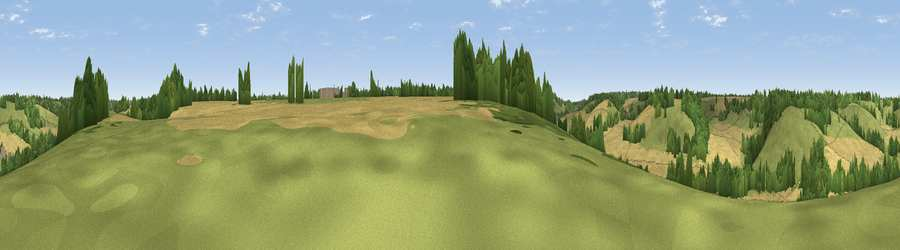

Viewpoint near Alkham
#43047 in England · top 81% of its area beats it · near AlkhamThe view, rendered

A 360° render of this exact spot computed from the terrain model, tree cover and land cover — summer colours, afternoon light, calibrated against photographs of famous viewpoints. Real trees, hedges and buildings will differ in detail.
The panorama
Grey silhouette: terrain skyline in each direction (720 bearings, Earth curvature and refraction included). Dashed green: skyline with trees (+15 m) and buildings (+8 m) as obstacles. Blue strip: how far the ground is visible on each bearing.
Where the view opens
Wedge length = distance to the farthest visible ground on that bearing (vegetation-aware). Rings at 10, 25 and 50 km.
What fills the view
42% cropland · 35% grassland · 22% woodland
Angular shares of the visible panorama (visual magnitude), not map area. Landscape diversity 0.47 (0–1 Shannon).
Key numbers
More beautiful places nearby
The staircase of upgrades: each row has a higher view potential than everything closer. Driving times are estimates from straight-line distance, calibrated against real road routing — check an actual route before setting out.
| Place | Direction | Drive | Score |
|---|---|---|---|
| Viewpoint near Alkham | NE · 1 km | ~2 min | 29.0 |
| Viewpoint near Alkham | NW · 1 km | ~2 min | 31.0 |
| Viewpoint near Capel-le-Ferne | S · 3 km | ~8 min | 80.2 |
| Viewpoint near Willingdon | WSW · 77 km | ~101 min | 83.4 |
| Wilmington Hill | WSW · 79 km | ~103 min | 85.4 |
| Viewpoint near Alciston | WSW · 83 km | ~107 min | 85.8 |
| Viewpoint near Alciston | WSW · 83 km | ~107 min | 86.8 |
| Firle Beacon | WSW · 83 km | ~108 min | 88.9 |
51.12312, 1.20784 · source: screening · position refined by local search. Computed location — check access rights before visiting.